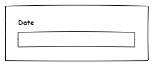
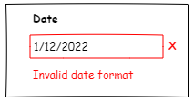

The right amount of information available at the right time.
As a user interacts with a thing, they can find the information they need when they need it.
You aren't overwhelmed by too much information all at once.
You aren't lost and confused because you can't figure out what to do.
Many people believe that "Technical Writing" is more about User Experience and Information Design
Some folks believe tech writers should own all the text on the screen.
Clear labels and guidance text help a lot.
There's nothing worse than documenting around poor UI design.
|
 |
 |
or...
See how a little bit of UI text can save you some documentation?
One theory of technical writing is that you are a user advocate.
If you're trying to document something, and it's terrible, advocate for change.
A lot of tech writers move into UX - User Experience.
Also called "Tool Tips"
(Sometimes used with Accessibility, too)
When you hover (maybe click, depending) over content, additional text appears in a popup.
Currently not available on mobile devices.
Often indicated with or , sometimes
Click (or hover) over the icon and get a blurb of text. (Or a hides a collapsible section)
The information tends to be longer than a pop-up/hover help.
This can be in a pop-up near the icon, or maybe open a slide out panel or another screen.
At the end of a pop-up, you might want to include a Learn more... link.
A link to more in-depth information.
This can open up the help, a slide out panel, or go off to other web sites.
Those bubbles in Facebook or Adobe Acrobat highlighting new features.
These text bubbles step you through some task in the UI.
(Also how-tos in games that walk you through something.)
Some are interactive, some are just informational.
(And remember, we're going into more detail in two weeks.)
The user manual integrated into your software.
When possible, context-sensitive is better.
Context-sensitive = Click help, get information about the screen you are on.
Once upon a time, F1 was used to launch the help.
(Sometimes it still works)
Over the years, the definition of "help" has changed.
We'll be talking more about help later in the course.
Remember, as a writer, you are a user advocate.
You may need to support many types of users.
Don't fall into the trap of documenting ALL THE THINGS
These are my current opinions
AI is not ready to replace tech writing yet.
Generative AI doesn't guarantee right answers.
Even natural language search needs to be taught.
I've been in two different companies that tried to throw AI at content and it did not work.
AI can help users, but it takes a lot of tuning and work.
Text editor: Notepad++ (PC)
(The Mac text editor I liked is no longer supported.)
Wireframe tool: The Pencil Project
Text file of name = value pairs.
https://en.wikipedia.org/wiki/.properties
Commonly used for configurations and text strings
A lot of software pulls all strings in to a separate text file for translation.
(Everyone know what a string is?)
While you can ask a developer to make the change for you, sometimes going in and editing a file yourself is a lot easier.
FYI, sometimes the strings contain variables, such as {$1}.
Ask a developer what the variables do.
Start exploring UI design and properties files
Many UIs have their text strings pulled out into properties files to make translation easier.
You may be asked to edit the text on a screen by going in and editing a properties file.
You must name the file FirstNameLastName.properties.
Please double-check last week's homework.
If your files are in the root of mcc_tools_tech, they are in the wrong place.
If your files are in mcc_tools_tech/Week01-IntroGitHub, they are in the wrong place.
Please move your files to mcc_tools_tech\Week01-IntroGitHub\Homework
In the Week02 folder, there is a PID.pdf. Full details are in there.
If you find this homework too easy and uninteresting:
Design a UI with PID. You can use a UI mockup tool like Pencil.
Because, yes, it's tricksy
Via the browser: Click Fetch upstream.
Via the command line: git pull https://github.com/ZoeLawson/mcc_tools_tech.git
Winter2024
Via GitHub Desktop: Choose a branch to merge into Winter2024
As explained last week, Git lets you collaborate. To do this you need to get files from the original repository.
To do this, you pull from the source repository into your repository.
You can do this "in the cloud" or locally.
Because you forked the repository, GitHub keeps a connection between your fork and the original repo.
If you have changes in your repo that aren't in the original repo, your repo is ahead.
If there are changes in the original repo that aren't in your repo, your repo is behind.
It is possible to be both ahead and behind at the same time. You can have local changes and need remote changes.
You must have all your remote changes locally before you can push.
This is very important for working with your fork and your local system.
You can often make a pull request without syncing, but I don't really recommend it.
This is what happened while I was trying to update this week's presentation.
C:\ZoeStuff\MCC\github\mcc_tools_tech>git push origin Winter2024
To https://github.com/ZoeLawson/mcc_tools_tech.git
! [rejected] Winter2024 -> Winter2024 (fetch first)
error: failed to push some refs to 'https://github.com/ZoeLawson/mcc_tools_tech.git'
hint: Updates were rejected because the remote contains work that you do
hint: not have locally. This is usually caused by another repository pushing
hint: to the same ref. You may want to first integrate the remote changes
hint: (e.g., 'git pull ...') before pushing again.
hint: See the 'Note about fast-forwards' in 'git push --help' for details.Your fork should have an easy to use button to get the latest and greatest files.
Near the top of your GitHub fork, there should be an area with a message
This branch is up to date with original repo name
You should be all synced up.
This branch is n commits ahead of original repo name
You need to make a pull request to get your changes to the original repo.
This branch is n commits behind of original repo name
You need to Fetch upstream to get the latest files from the original repo.
You usually cannot push to a repo without being 'in sync' with it.
Running Fetch upstream pulls/fetches the latest and greatest files from the upstream repo into your fork in GitHub.
These files are in the cloud, not on your computer.
Remember to go into GitHub Desktop and click Fetch origin.
In GitHub Desktop, click the arrow next to the current branch name.
Select Choose a branch to merge into Winter2024.
Select upstream/Winter2024.
Click Create a merge commit.
You just got the latest and greatest to your laptop.
Don't forget to get the files up to your fork in GitHub.
In GitHub Desktop, click Push origin.
GitHub is integrated with some CI/CD tools
(CI/CD = Continuous Integration/Continuous Delivery)
You commit files and push them to the remote repo. This triggers a build.
In a real environment, this can build output or build software.
This week, it's just making an HTML file.